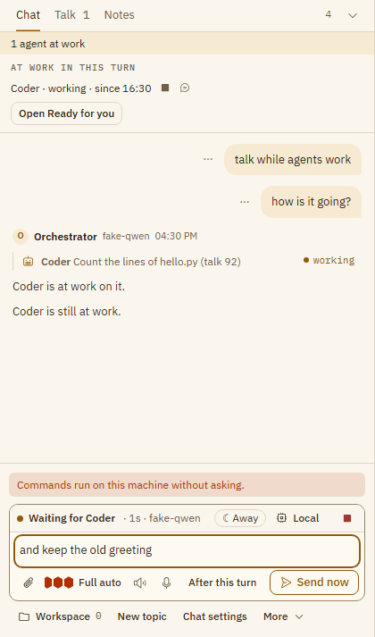

Talking while agents work¶
A turn stays open while the Orchestrator's agents work, and you can talk to the Orchestrator in it: ask how things stand, add a wish, have it open, message or stop an agent - without waiting for the turn to end.

A word sent now answered in the same turn, while the Coder works: the line over the chat, opened.
Send now and After this turn¶
While a turn runs, the message box has two ways to send:
- Send now (Enter): the Orchestrator reads it in this turn. Your message goes into the turn at work. If the Orchestrator is waiting for its agents, it wakes and answers you; if it is in the middle of a step, it reads your message at its next step. The turn does not end before it has read it.
- After this turn: it waits in the queue and starts its own turn, as a message did before.
The box says what it does: "Write to the Orchestrator - it reads it in this turn…". With no turn at work there is only Send.
Some turns take no message while they run. Then Send now puts your message in the queue and the box says why under it - Queued: and one of:
| Why | When |
|---|---|
| the turn was ending | the Orchestrator had given its last answer |
| this turn takes no message now (a plan turn) | the turn writes a plan (Plan first) |
| this turn takes no message now (a comparison) | the turn is one side of a comparison |
| this turn takes no message now (a To-do task's turn) | the turn works on a To-do task |
| this turn takes no message now (a job while you were away) | a ☾ Away job's turn |
| this turn takes no message now (not one you started) | the turn was not started from your own page |
| it is for another topic | you wrote into another topic, or started a new one |
A message is in exactly one place: in the turn at work, or in a turn of its own. If the turn ends before the Orchestrator read it - you pressed Stop, or the turn failed - your message goes on in a turn of its own, queued, so it is never lost. One already written into a CLI Orchestrator's turn is not sent again: what came of it is said instead (below).
When it answers your message, the Orchestrator changes nothing itself: its steps until that answer are refused Write files, Edit files, Diagram pictures, Run commands, a skill's script, Web requests and any MCP server's tool. It hands new work to an agent (opens one, messages one, stops one) or says it in its answer; it may still read, look things up, Remember and propose To-do tasks, which wait for your OK as ever. A CLI Orchestrator's own tools are only told so. Its own work goes on as before once it has answered. While it answers it waits for no place among the agents at work: its agents keep theirs, and it answers you at once (Settings › This project › Limits and money › More limits).
Only you can send now: the message must come from KOLONİ's own page. What you write is your own word, as any message of yours is - Full auto's judge reads it as yours.
With a CLI as the Orchestrator¶
| CLI | Send now |
|---|---|
| Claude Code, Codex, Copilot run Native | goes into its turn at once (measured 27 Nov 2026: Claude Code 2.1.332, Codex 0.172, Copilot 1.0.114) |
| agy, and any CLI run One session per agent | read when its current run ends, in one more run of the same turn |
A word to the Orchestrator about an agy agent (its window's box) wakes the Orchestrator as your own word does, while it waits for its agents.
What came of a word sent into a CLI's turn¶
A word written into a CLI's running turn - Send now to a CLI Orchestrator, an agent's Tell box, or another agent's message to it - comes to one of three ends, by what the CLI itself shows:
| End | What the CLI shows | What you see |
|---|---|---|
| taken | Claude Code echoes it before its turn's result; Codex answers with its turn; Copilot names it as taken into its work before it goes idle | nothing more: it reads it in that turn |
| not sent | its turn was over (Codex: "no active turn to steer"), or it could not be written | Send now: the Orchestrator reads it at its next step, or in one more run of the turn; Tell: the box says the turn is ending - try again once it has finished. Where Codex's no came only after 5 seconds, Tell's word waits for the agent's next step and a line in the chat says so: Coder's turn was over before your word reached it: "use blue" - it is handed to Coder at its next step, if it takes one; say it once more if it still matters |
| unknown | it was written, but by the end of its turn the CLI showed no sign it took it - or the CLI said no in a way not measured | a line in the chat: Lead may not have read your word before its turn ended: "use blue" - it is not sent again; say it once more if it still matters |
A word of Send now, Tell or an agent's message that is unknown is never sent again: the CLI may have read it. A Claude Code that echoes your word only after its result takes one more turn on it; KOLONİ reads that turn to its end in the same run, and your word is still said unknown - it was not taken in the turn it was sent into. The agent's own record says the same: Lead may not have read this before its turn ended; it is not sent again. A Change of a decision or of an answer is different: it stands whatever came of it, and the agent is given it again from its next step or run on - as is KOLONİ's own word to an Orchestrator that changed files with a command.
An agent that messages a CLI agent at work is told what came of it the same way - in the message's answer where it is known at once (Codex), else by KOLONİ once it is: Coder took your message ("use blue") into its turn: it is read in its turn (from its next step on - it takes no step of its own for it); your message ("use blue") did not reach Coder's turn: it is handed to Coder at its next step, if it takes one or Coder's turn ended before it showed it took your message ("use blue"): it may not have read it; it is not sent again (a note, read at once).
Agents in the background¶
The Orchestrator of an API model can open an agent in the background: it starts it and goes on at once - talks to you, opens others, messages or stops it. When the agent ends, its report comes to the Orchestrator as a note and it takes one step to read it. Until then it says the agent is still at work, never what it found. A CLI's Orchestrator always went on like this; it reads its agents' reports once all of them are back.
Background agents are held to the chat's limits as any agent: how many work at once, how many a turn opens, how deep (Step limits). Their cards come to you as usual, and Full auto's judge looks at their commands as at any. Each wake is a step of the Orchestrator's, counted to its role's limit. Stop on the turn stops them all.
The Orchestrator can also run a command in the background (run_command with background): it goes
on, reads the command's output with command_output, stops it with stop_command, and is told when it
ends. At most as many run at once as the chat lets agents work at once. The turn's end stops them.
Messages between agents: reply, leave, now¶
The Orchestrator of an API model also says how a message to one of its agents (message_agent)
goes - only to an agent it could message anyway:
| How | The agent is not at work | The agent is at work |
|---|---|---|
| reply (as ever) | it takes a turn on it while the Orchestrator waits for its reply | it is handed it at its next step - or, a Claude Code, Codex or Copilot agent, in its running turn |
| leave | it takes it up now, in a turn of its own; the Orchestrator goes on, and the reply comes to it as a note, as a background agent's report does | it is handed it at its next step; where its work ends before that, it takes it up in a turn of its own, and its reply comes the same way |
| now | as leave | into its running work: a CLI's running turn - with what came of it, as below - else at its next step, as leave |
A turn an agent takes on a message left waits for its other turns and for a place, as any agent's turn; a turn in which it only answers another agent's question is not handed it - its own work is. A message left counts twice toward the turn's messages between agents (its note and the turn it may start) from the moment it is left, so it is refused where there is room for one only. However it ends, the Orchestrator is told: the agent read it (from its next step on, without a step of its own for it), its reply, or why it was not taken up - the agent was stopped, or can no longer be messaged, or the turn ended first, or it was stopped as it took it up (then it may have read it); it is not sent again. Every other agent, and a CLI Orchestrator, sends a message as a reply, as does a message to an agent of an earlier turn: one that asks otherwise is told so.
Stop and Message on one agent¶
An agent at work that the Orchestrator (or one of its agents) opened has Stop and Message on its node on the canvas and in its window's head:
- Stop stops that agent alone. The chat says "You stopped Coder. Its work so far is kept for
your Take in; nothing of it is in the project." The Orchestrator is told, as KOLONİ's word, not to
open it again unless you ask; the rest of the turn goes on. The Orchestrator has its own
stop_agentfor one it opened. - Message opens the agent's window at its Tell box.
KOLONİ's own checks (Stop this check) and the agents of a team's recipe (the team's Stop) are stopped their own way, so they have no Stop of their own here.
An agy agent cannot hear messages while it works: its box says so - "Coder can't hear messages while it works (agy). Tell the Orchestrator instead - it can stop it and start it again." - and sends your words to the Orchestrator. A Claude Code, Codex or Copilot agent hears them in its running turn.
When an agent ends and nobody is looking¶
When a background agent ends while nobody looks at its chat, KOLONİ shows a desktop notice - "Reviewer finished: 2 findings", "Coder stopped", "Tester failed" - where the project has Show a desktop notification on (Settings › This project › Notifications). The notice holds only the agent's name and how it ended, never its words. A card or a question that starts to wait for you gets a notice too ("Coder asks you a question", "3 cards wait for you") - also only while nobody looks at its chat.
"Nobody looks" is herdr's rule: no page of KOLONİ's has the chat on screen with its tab seen and its window in front. A tab you hid, another window you went to, or another page of KOLONİ's open over the chat (Chats, Settings) is nobody looking - the notice comes; the chat on screen in front of you is somebody - it does not.
The line over the chat¶
While a turn runs with agents at work below the Orchestrator, a plan of the Orchestrator's, or something that waits for you, one line sits over the chat, under its tabs:
3 agents at work · step 3 of 6 · 1 waits for you · ≈ 0.40 USD
- agents at work: those working, waiting for their own agents, for a place or for a file. One that waits for your yes to start is a card, counted with what waits for you.
- step 3 of 6: the step of the Orchestrator's plan after those done (see
update_planbelow), there only while it shows one. - waits for you: the cards of this chat that wait for your word, as the canvas counts them.
- what the turn cost so far at your prices - its agents and KOLONİ's own requests for it, the advisor's too. "≥" where a part of it has no price; left out where nothing of it is priced (a CLI on a plan, a model with no price), never a made-up zero. It is read again at most every 5 seconds as the agents report their tokens.
Click the line for At work in this turn: each agent, "Coder · working · since 14:02", with its Stop and Message; the Orchestrator's plan, a step a line; and Open Ready for you.
What the Orchestrator has while its agents work¶
The Orchestrator at its own work - not a sub-agent, an answer or a discussion, nor a plan turn or a
side of a comparison - also has these, besides stop_agent; anywhere else they are refused, also
when named. Each answer of theirs is data for it:
what agents, models and other people wrote stays in quotes, with secrets masked.
- agents_at_work - who of this turn is at work now: "2 at work in this turn:", then a line each, "- Coder (Coder role): running since 14:02 (3 min), in the background; waits for: its command "pytest -q", running since 14:03; last said: "Reading the tests…"". An agent's last words are cut at 300 characters and marked where they read like orders; one that waits for your yes "waits for the user's yes", one that waits for a place "waits for a place". A CLI Orchestrator has it too. What it waits for comes from KOLONİ's records alone, never guessed: a card for you (its command or its change, named), an answer to its question or on one of KOLONİ's cards, its command running and since when, another agent (the one that holds a file it wants, or its own agents at work), a place (at its provider, "1 of 1 at work there", or among the turn's agents), your yes to open it - or "unknown" where the records say nothing. At work in this turn, over the chat, says it too: "Coder · working · since 14:02 · waits for its command "pytest -q", running since 14:03" (nothing where the records say nothing).
- update_plan - the Orchestrator of an API model shows you its plan: its steps, each pending, in progress or done, at most 30 of 200 characters. It is its own words, and says so: its window shows it under Plan (its own words) (a Codex Orchestrator's own plan shows there too), and the line over the chat says its step. The plan goes with the turn. A CLI's own plan is its own, so a CLI is not given it.
- ask_advisor - a second model's advice on a hard choice, at most 3 times a turn. The advisor is your Advisor model (Settings › The app › Agents: "A model the Orchestrator may ask for advice. It sees the Orchestrator's summary and the turn's recent steps, masked."); with none chosen, a model on another provider than the Orchestrator's, the strongest first. Only models that can answer with every tool off are offered, as for the Judge model. It is sent the Orchestrator's question (1,000 characters) and summary (4,000), its last 12 steps of the turn and who is at work - every secret KOLONİ knows, and keys known by their shape, masked - and no tools. Its answer (2,000 characters) is data. Where no advisor can be asked - none to ask, no room on its provider, the turn past its token limit, no answer within a minute (two for a CLI) - the Orchestrator is told why and goes on. Its request counts in the turn's spend and on Usage under its model.
- note_decision - a decision the Orchestrator took for you without asking (a library, an approach) goes under Decided for you on Ready for you: "Orchestrator · Decided: "Use SQLite for the cart"" with its reason, marked new until your OK. At most 10 a turn, each one line of 200 characters. It changes nothing by itself. Change takes your own words: while that turn is still at work they go into it as your message ("I change your decision …: …"), else a turn of KOLONİ's in that chat tells the Orchestrator. See Decisions.
- read_pr_feedback - one pull request of the project's GitHub repository, by its number or address:
the review decision, the checks that failed or have not ended, each review and comment with who wrote
it, and the comments on lines. It is read with your own
gh- offered whereghis installed and the project's origin is on github.com; not logged in, it says so - and it only reads: there is no way to reply with it. What reviewers and checks say is theirs, never yours: framed as data, masked, cut at 20,000 characters. Where it reads like orders to an agent, the chat warns you, as it does for a web page or an MCP tool. - suggest_preference - when you say how you want work done from now on, your own sentence for Your preferences, quoted from your prose of the turn: added at once with Undo in the chat, or - with New preferences from your words at Ask me first - on a card with Add and Not now. See Memory.